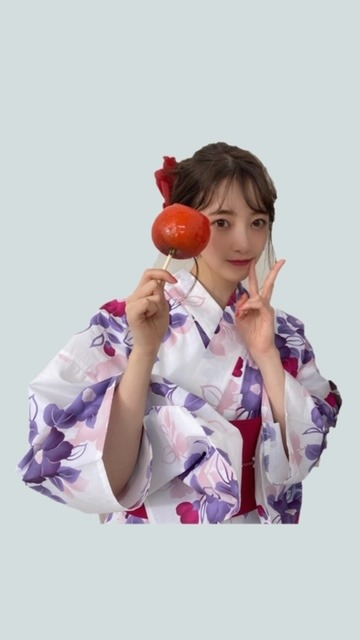

2020/0806Thu左側希望
こんにちは
好きな映画や気になった映画は観直す癖が
ありまして昨日は朝は千と千尋の神隠し
夜は劇場を見返しました
劇場の自転車2人乗りのシーンは
お互いの愚かさが痛いほど見えて泣けます
山崎賢人さん演じる男性は
私からしたら一周まわって愛おしいクズで
まだまだ未熟というか子供なところがあって
松岡茉優さん演じる女性はそんな部分に
苛立ちと愛おしさを感じて放っておけない
んだろうなあとか
簡単でシンプルなことが大人になればなるほど
こじらせてしまって見えないふりをして
空振りして弱さを見せずに強がって
優しくしたい優しくされたい優しくしたくない優しくされたくない 矛盾ばっかりでこんがらがった関係性にため息ばかり出ました
本当に哀れというか愚かというか、、
でも
" 劇場 "人間臭くて見終わったあと
みんな幸せになったらいいな
って私も思うほど私は好きな作品でした
映画を観ていると
いろんな物理的発見、心理的発見ができて
わたしの世界が少し広がる気がします
演じることはもっと難しいけど
わたし自身がいろんな作品に依存しているからこそ
人に依存されるような作品作りに
これからも携わっていけたら嬉しいです
観るのも、演じるのも楽しいですねサイコーです

そしてうたコンありがとうございました！
TUBEさんとAKB48さんとコラボ
させていただきました
本番まで4人で確認したりして
ドキドキ緊張でしたが楽しかったです
あと浴衣も着れた〜〜
浴衣好きでお家に5種類くらいあるのですが
買ってもなかなか着る機会なくて...
今年は家族で浴衣を着ておうち夏祭りをしようか
と話しています
話していますというか私が1人で話しています
家族はあまり乗り気じゃない...
ちなみにGRLの浴衣もかわいいのでみてみてね
お揃いにしましょうぜひ
うたコンの写真撮り忘れたので
GRLのオフショット載せます


ずっとこのリンゴ飴食べたくてうずうずしてました
お祭りとか花火大会行きたくなりますよね〜
脳内back numberさんのわたがし再生
いつも花火よりも屋台目当てだったので
焼きそば イカ焼き いちご飴 カステラとかき氷
はやはり必ず食べたい！
でも青春が無かったからこそ花火と彼メインの
青春もしてみたかったな...生まれ変わったらします...
そんなこと言ってるけど多分歩き疲れて
つかれたぁとすぐに座りこむでしょう
わがままなので
で、しょうがないなぁって言いながら
おんぶとかしてくれたら最高です
喜んで飛びつきます
ハハハ...

千羽鶴のイヤリングかわいかったです
いいことありそう
京都っぽい
来週の月曜日もCDTVに出させていただきます！
すっかり夏ですねえ
夏は好きです
最近は観るアニメも聴く音楽も夏仕様です
宇治金時のかき氷がすきなので
作ってみようかなと思っています
ではは
2020/08/06 14:00
コメント(267)
未央奈ー！ブログありがとう！！！
映画って色んな事を教えてくれるよね。様々な人の人生だったり、考え方、価値観、等々。映画一つ一つ何かしら監督が伝えたいことがあって制作されていて、その意図を自分なりに解釈したり他の人の解釈を聞いたりして知見を広げていく感じ、いいよね。
うたコンで着てた赤色？の浴衣めっちゃ可愛かったし、ぷく顔してたよね？？可愛かった！(｡･ω･｡)
5種類もあるんだ！青系持ってそう！！
御家族でおうち夏祭り是非開催してね〜
お揃いに出来るか分からないけど（一応私男性）、お揃いしたい！笑
オフショットありがとう〜！未央奈の浴衣姿見たかった！！！(,,•﹏•,,)
浴衣を着る時の女性の髪型がめっちゃ好き！
そのオフショットの髪型最高に可愛い！
あれれ、あれれ、どうしたの未央奈笑
大丈夫。これから青春出来るよ。諦めないで。
わがままな未央奈絶対に可愛いだろうなぁ〜笑
ハハハ…って笑悲しくなっちゃうわ笑
乃木坂が青春だよ〜。未央奈が思い浮かべてる青春って、なかなか体験出来るものでもないし、みんながみんないわゆる青春！ってのをやってるかけじゃないから悲しくならないで〜笑
京都行けるようになったら行きたいね！
宇治金時のかき氷が好きなのね！！前にも言ってた気がする！
え！作って作って！！作ったらブログ等々に写真載せて欲しいな！お願いします！！(,,•﹏•,,)
いつもブログありがとうね！！！
読むの楽しみにしてるんだよ〜(,,•﹏•,,)
映画って色んな事を教えてくれるよね。様々な人の人生だったり、考え方、価値観、等々。映画一つ一つ何かしら監督が伝えたいことがあって制作されていて、その意図を自分なりに解釈したり他の人の解釈を聞いたりして知見を広げていく感じ、いいよね。
うたコンで着てた赤色？の浴衣めっちゃ可愛かったし、ぷく顔してたよね？？可愛かった！(｡･ω･｡)
5種類もあるんだ！青系持ってそう！！
御家族でおうち夏祭り是非開催してね〜
お揃いに出来るか分からないけど（一応私男性）、お揃いしたい！笑
オフショットありがとう〜！未央奈の浴衣姿見たかった！！！(,,•﹏•,,)
浴衣を着る時の女性の髪型がめっちゃ好き！
そのオフショットの髪型最高に可愛い！
あれれ、あれれ、どうしたの未央奈笑
大丈夫。これから青春出来るよ。諦めないで。
わがままな未央奈絶対に可愛いだろうなぁ〜笑
ハハハ…って笑悲しくなっちゃうわ笑
乃木坂が青春だよ〜。未央奈が思い浮かべてる青春って、なかなか体験出来るものでもないし、みんながみんないわゆる青春！ってのをやってるかけじゃないから悲しくならないで〜笑
京都行けるようになったら行きたいね！
宇治金時のかき氷が好きなのね！！前にも言ってた気がする！
え！作って作って！！作ったらブログ等々に写真載せて欲しいな！お願いします！！(,,•﹏•,,)
いつもブログありがとうね！！！
読むの楽しみにしてるんだよ〜(,,•﹏•,,)
未央奈ちゃんこんばんは！ありがとうございます‼かなり楽しみにしてます‼頑張ります‼気をつけて下さい！ありがとうございます！かなり楽しみにしてます‼頑張ります‼
未央奈ちゃんこんにちは。
未央奈ちゃんの浴衣姿大好き！！！
また何かで着てるところを見る機会があると嬉しいんだけど…。
未央奈ちゃんの浴衣姿大好き！！！
また何かで着てるところを見る機会があると嬉しいんだけど…。
こんにちは～。
みおなちゃんは映画のディテールまで観
るタイプかな。
僕はどちらかと言うとストーリー派なの
で、１回観たらそれでおしまい。
ちょっと反省。
みおなちゃんみたいに感想を言えるよう
になりたい。
みおなちゃん家はハッピーだね。という
か、みおなちゃんがハッピーなのかな。
青春だって十人一色。乃木坂での青春な
んか万が一。超貴重。
でもおんぶされたいと思ってたとは。
浴衣はいいね。涼しげだし綺麗。
みおなちゃんは映画のディテールまで観
るタイプかな。
僕はどちらかと言うとストーリー派なの
で、１回観たらそれでおしまい。
ちょっと反省。
みおなちゃんみたいに感想を言えるよう
になりたい。
みおなちゃん家はハッピーだね。という
か、みおなちゃんがハッピーなのかな。
青春だって十人一色。乃木坂での青春な
んか万が一。超貴重。
でもおんぶされたいと思ってたとは。
浴衣はいいね。涼しげだし綺麗。
未央奈〜！！
ブログ更新ありがとう
カウントダウンTV来週も見るよ〜！！
ジコチューとI see.楽しみ
うたコンめっっっっちゃ楽しそうだった
未央奈の浴衣めっっっっちゃ似合ってる！
次の更新も待ってるね〜！！
ブログ更新ありがとう
カウントダウンTV来週も見るよ〜！！
ジコチューとI see.楽しみ
うたコンめっっっっちゃ楽しそうだった
未央奈の浴衣めっっっっちゃ似合ってる！
次の更新も待ってるね〜！！
いつでも背中空いてるからおんぶしてあげるよ！
乃木恋で似たようなストーリーあったかも。
花火より自分未央奈ちゃんをずっと見てるかも（笑）
乃木恋で似たようなストーリーあったかも。
花火より自分未央奈ちゃんをずっと見てるかも（笑）
ブログ更新ありがとう！
劇場、早く観たい…学生のキラキラした青春モノマネも好きだけど、愛がなんだみたいな大人の恋愛のもどかしさも好き。
色んな作品を観ていく中で、当時の衝撃とか作品のメッセージがずっと心にこびりついている映画や舞台がいくつかあって、ホットギミックもその中の一つ。1年経った今も未央奈ちゃんの演技に、初ちゃんに魅了されて依存しているような不思議な感覚です。
うたコンで未央奈ちゃんの浴衣姿を見られて嬉しかったな〜すごく似合っていて可愛かった⸜(*ˊᵕˋ*)⸝
浴衣を着るとお家でもぐっと夏休み気分を味わえそう…！屋台メニュー美味しいもんね、私も宇治金時のかき氷大好き。
GRLの浴衣もすごく可愛くて欲しくなる…イヤリングも素敵！
オフショット沢山ありがとう︎☺︎
劇場、早く観たい…学生のキラキラした青春モノマネも好きだけど、愛がなんだみたいな大人の恋愛のもどかしさも好き。
色んな作品を観ていく中で、当時の衝撃とか作品のメッセージがずっと心にこびりついている映画や舞台がいくつかあって、ホットギミックもその中の一つ。1年経った今も未央奈ちゃんの演技に、初ちゃんに魅了されて依存しているような不思議な感覚です。
うたコンで未央奈ちゃんの浴衣姿を見られて嬉しかったな〜すごく似合っていて可愛かった⸜(*ˊᵕˋ*)⸝
浴衣を着るとお家でもぐっと夏休み気分を味わえそう…！屋台メニュー美味しいもんね、私も宇治金時のかき氷大好き。
GRLの浴衣もすごく可愛くて欲しくなる…イヤリングも素敵！
オフショット沢山ありがとう︎☺︎
未央奈ちゃんおはよ〜
好きな映画見直すのはよくあるわぁ〜
バラエティ番組でも好きな回は何度も観たり
お気に入りのシーンの部分だけ繰り返して観てたり(笑)
未央奈ちゃんはなにやっても絵になるから
ホント大好きだわ
好きな映画見直すのはよくあるわぁ〜
バラエティ番組でも好きな回は何度も観たり
お気に入りのシーンの部分だけ繰り返して観てたり(笑)
未央奈ちゃんはなにやっても絵になるから
ホント大好きだわ
ブログ更新ありがとう！
うたコンお疲れ様～ 浴衣綺麗で可愛かった！
夏らしいことしたいですね、、
back numberも良き！
来週のCDTVも楽しみにしてます！
うたコンお疲れ様～ 浴衣綺麗で可愛かった！
夏らしいことしたいですね、、
back numberも良き！
来週のCDTVも楽しみにしてます！
ブログ更新ありがとう！
俺も好きな映画や気になる映画は何度も見返すよ！
劇場、気になってるんだよね！観たいな！
うたコンでの浴衣めちゃくちゃ可愛かった！
堀ちゃんみたいな人と浴衣でお祭り行きたいなぁ
俺も屋台目当てだったよ！
あとは友達とも会えるから楽しいよね！
CDTV楽しみにしてるね！
俺も好きな映画や気になる映画は何度も見返すよ！
劇場、気になってるんだよね！観たいな！
うたコンでの浴衣めちゃくちゃ可愛かった！
堀ちゃんみたいな人と浴衣でお祭り行きたいなぁ
俺も屋台目当てだったよ！
あとは友達とも会えるから楽しいよね！
CDTV楽しみにしてるね！
ブログ更新ありがとうございます！
りんご飴おいしそーー
浴衣も超似合ってる！
次のブログも楽しみにしてます！
りんご飴おいしそーー
浴衣も超似合ってる！
次のブログも楽しみにしてます！
ブログ更新有難う！
今ちょうどGRLのお洋服着てる！
ネット通販で買ってもらって、
2日前くらいに届いた！
未央奈ー！
リクエストです！
ナチュラルメイクして欲しいです
ジブリ見たいなー
今度金曜ロードショーであるよね！
うちの1番好きなジブリ作品は
借りぐらしのアリエッティです
翔くんイケメンじゃない？？
みおなは？
ちなみに聲の形この前久しぶりに見たけど
やっぱうちはゆずる推し！！
またブログ更新待ってます〜！
今ちょうどGRLのお洋服着てる！
ネット通販で買ってもらって、
2日前くらいに届いた！
未央奈ー！
リクエストです！
ナチュラルメイクして欲しいです
ジブリ見たいなー
今度金曜ロードショーであるよね！
うちの1番好きなジブリ作品は
借りぐらしのアリエッティです
翔くんイケメンじゃない？？
みおなは？
ちなみに聲の形この前久しぶりに見たけど
やっぱうちはゆずる推し！！
またブログ更新待ってます〜！
ブログ更新ありがとうございます！
うたコン見ましたよ～
浴衣姿可愛すぎすぎました！！
CDTVも楽しみです！
堀ちゃんと夏祭り行けたらどんだけ最高やろか...笑笑
また更新待ってます！
うたコン見ましたよ～
浴衣姿可愛すぎすぎました！！
CDTVも楽しみです！
堀ちゃんと夏祭り行けたらどんだけ最高やろか...笑笑
また更新待ってます！
みおなさん、浴衣がよく似合っててかわいいしりんご飴もめっちゃおいしそうです。
未央奈ブログ更新ありがとう！
この前の浴衣姿めっちゃ似合ってたよーっ！
僕は今日部活にバイトに大忙しです(>_<)
本当にこの頃暑いよね(^^;;
未央奈も体調崩さないように気をつけてね！
次のブログも楽しみに待ってるね！
この前の浴衣姿めっちゃ似合ってたよーっ！
僕は今日部活にバイトに大忙しです(>_<)
本当にこの頃暑いよね(^^;;
未央奈も体調崩さないように気をつけてね！
次のブログも楽しみに待ってるね！
未央奈ちゃん！ブログありがと〜！
浴衣可愛いよね！すごく似合ってます！
今年は浴衣着れないから寂しいよね、、
来週のCDTVも楽しみにしてます♡
浴衣可愛いよね！すごく似合ってます！
今年は浴衣着れないから寂しいよね、、
来週のCDTVも楽しみにしてます♡
ブログ更新ありがとうございます！
暑いですねー
私は今日、高校の説明会に行ってきました！
お祭り、もう2年以上行ってないです…
かき氷を食べたあとに舌が青とかになるのが良い笑
お体ご自愛ください。
暑いですねー
私は今日、高校の説明会に行ってきました！
お祭り、もう2年以上行ってないです…
かき氷を食べたあとに舌が青とかになるのが良い笑
お体ご自愛ください。
ブログ更新ありがとう
来週のCDTVライブ楽しみにしてます〜〜
浴衣姿エグいですね。 めっちゃ美人さんですよ。
頑張ってください。
こんにちは。
映画いいですね。
うたコン見ました。
よかったです。
映画いいですね。
うたコン見ました。
よかったです。
虹プロ見てますか？
見てたら、誰が好きですか？
見てなかったら、是非見てください！！！！
見てたら、誰が好きですか？
見てなかったら、是非見てください！！！！
夏だね！
浴衣すっごく可愛かった
まだかなーって思ってたら
浴衣のみおなちゃん映ってて
「みおなだーーーー！」って叫んだ
めっちゃ可愛かったです！
浴衣すっごく可愛かった
まだかなーって思ってたら
浴衣のみおなちゃん映ってて
「みおなだーーーー！」って叫んだ
めっちゃ可愛かったです！
未央奈が好きすぎた
祭りは、ベビーカステラとか、お好み焼きとか
最高 青春は、いつでも、起こせる
青春は、いつでも、起こせる
みおな
最高
みおな
未央奈ちゃん♪ブログの更新ありがとうね♪凄く嬉しいよ！好きな映画とか見返すの良いよね♪自分も好きな映画とか気になった映画を何回も見返してるよ(*^^*)物理的発見とか心理的発見とか良いよね！あと、自分は好きなドラマも見返してるよ(*^^*)
リアタイでうたコン見たよ♪浴衣姿の未央奈ちゃん凄く可愛いくて癒されたよ♪
おうち夏祭り良いね♪凄く楽しそうだね！自分も一緒に楽しみたいなって思ったよ！
GRLの浴衣姿の未央奈ちゃんも必ずチェックしてるよ！凄く可愛いよね(*^^*)浴衣姿凄く似合ってるよ♪お祭りとか花火大会行きたくなるよね～♪
自分は必ず屋台で食べるのは、焼きそば、かき氷、フランクフルト、たこ焼きは必ず食べてるよ！大好きな未央奈ちゃんと一緒に行きたいよ(*^^*)大好きな未央奈ちゃんのわがままなら喜んでおんぶも何でも叶えるよ(≧∇≦)人の面倒みたりするのが好きだから大好きな人のわがままなら本当に嬉しいよ(*^^*)
千羽鶴のイヤリング素敵だね♪可愛いよ(*^^*)
来週のCDTV凄く楽しみだよ♪必ず観るね♪
今日も暑いね(^_^;)本当に夏だね！自分も夏は好きだよ！また、ブログの更新楽しみにしてるね♪未央奈ちゃん大好きだよ♪ではは！
堀 未央奈神推し秀喜より！(≧∇≦)
リアタイでうたコン見たよ♪浴衣姿の未央奈ちゃん凄く可愛いくて癒されたよ♪
おうち夏祭り良いね♪凄く楽しそうだね！自分も一緒に楽しみたいなって思ったよ！
GRLの浴衣姿の未央奈ちゃんも必ずチェックしてるよ！凄く可愛いよね(*^^*)浴衣姿凄く似合ってるよ♪お祭りとか花火大会行きたくなるよね～♪
自分は必ず屋台で食べるのは、焼きそば、かき氷、フランクフルト、たこ焼きは必ず食べてるよ！大好きな未央奈ちゃんと一緒に行きたいよ(*^^*)大好きな未央奈ちゃんのわがままなら喜んでおんぶも何でも叶えるよ(≧∇≦)人の面倒みたりするのが好きだから大好きな人のわがままなら本当に嬉しいよ(*^^*)
千羽鶴のイヤリング素敵だね♪可愛いよ(*^^*)
来週のCDTV凄く楽しみだよ♪必ず観るね♪
今日も暑いね(^_^;)本当に夏だね！自分も夏は好きだよ！また、ブログの更新楽しみにしてるね♪未央奈ちゃん大好きだよ♪ではは！
堀 未央奈神推し秀喜より！(≧∇≦)
ブログ更新ありがとうございます
最近未央奈さんをテレビで見る機会がたくさんあって幸せです！
暑い日が続いているので、体調には気をつけてくださいね！
最近未央奈さんをテレビで見る機会がたくさんあって幸せです！
暑い日が続いているので、体調には気をつけてくださいね！
劇場気になる！見てみようかな♪
浴衣可愛いね 未央奈ちゃんが1番だけど
浴衣可愛いね 未央奈ちゃんが1番だけど
来世では付き合おう！
ブログ更新ありがとうございます！
浴衣姿が可愛いです！
千と千尋は小さい時から何度も見てます…名作ですね〜
お祭りを楽しむ堀ちゃんを想像するとかわいいです！
暑いのでお気をつけて！
浴衣姿が可愛いです！
千と千尋は小さい時から何度も見てます…名作ですね〜
お祭りを楽しむ堀ちゃんを想像するとかわいいです！
暑いのでお気をつけて！
未央奈お疲れ様！！
ブログ更新ありがとう。
うたコンお疲れ様でした。
浴衣姿めっちゃ似合ってたよ！！
未央奈みたいな子と花火大会とか夢があるな〜。
妄想だけど、そんな彼は羨ましいですね笑
CDTVも楽しみにしてるよ！！
暑い日続くけど体調に気をつけてね。
ブログ更新ありがとう。
うたコンお疲れ様でした。
浴衣姿めっちゃ似合ってたよ！！
未央奈みたいな子と花火大会とか夢があるな〜。
妄想だけど、そんな彼は羨ましいですね笑
CDTVも楽しみにしてるよ！！
暑い日続くけど体調に気をつけてね。
更新ありがとうございます!!カウントダウンライブライブ絶対見ます！
堀ちゃん、浴衣凄く似合ってて可愛かった！
大好きでーす！
大好きでーす！
未央奈ちゃん＼(^o^)／お疲れさまでした
相変わらず見たことある作品を見返すよね
逆に新作品もちゃんと見ているかな？
メンバーが出ている映画を見る予定ある？
うたコンお疲れさまでした
今年でも浴衣を着れて良かったよね＼(^o^)／
CDTVの方も楽しみ＼(^o^)／
GRLのオフショットもありがとう
本編も見なきゃ(ﾟдﾟ)！
これからも頑張って(/･ω･)/
相変わらず見たことある作品を見返すよね
逆に新作品もちゃんと見ているかな？
メンバーが出ている映画を見る予定ある？
うたコンお疲れさまでした
今年でも浴衣を着れて良かったよね＼(^o^)／
CDTVの方も楽しみ＼(^o^)／
GRLのオフショットもありがとう
本編も見なきゃ(ﾟдﾟ)！
これからも頑張って(/･ω･)/
カウントダウンライブライブ楽しみにしてます！
ブログ更新ありがとう！！
浴衣姿めっちゃかわいかった〜！
インスタでまた質問のやつやってほしいです。
相談したいことがあって
浴衣姿めっちゃかわいかった〜！
インスタでまた質問のやつやってほしいです。
相談したいことがあって
ブログ更新ありがとう。うたコン見たよ。浴衣姿可愛いかったよ。来週も楽しみに待ってます。
眉毛すきー！かわいい！♡
未央奈ちゃん今日もブログ更新ありがとー
うたコン見たよー
浴衣姿めっちゃ可愛かった❤️
憧れます‼️
誰も聞いてないのですがRoute246のサビが踊れるようになりました‼️
未央奈ちゃんと同じダンスを踊れることだけでとても嬉しいです‼️
どうでもいいですね
CDTV ジコチューとI See…でしたね‼️
ジコチューの未央奈ちゃんのウィンク毎日楽しみにしてます‼️
私はウィンクができないのでコツや練習方法を教えてもらいたいです‼️
出来るようになってもやる相手はいないけど…
CDTV楽しみにしてます‼️
ファイティン‼️
うたコン見たよー
浴衣姿めっちゃ可愛かった❤️
憧れます‼️
誰も聞いてないのですがRoute246のサビが踊れるようになりました‼️
未央奈ちゃんと同じダンスを踊れることだけでとても嬉しいです‼️
どうでもいいですね
CDTV ジコチューとI See…でしたね‼️
ジコチューの未央奈ちゃんのウィンク毎日楽しみにしてます‼️
私はウィンクができないのでコツや練習方法を教えてもらいたいです‼️
出来るようになってもやる相手はいないけど…
CDTV楽しみにしてます‼️
ファイティン‼️
堀ちゃん、ブログ更新ありがとう！
青春はまだまだ、間に合うよ！
今年は難しいけどね。
浴衣姿いいね！色がいい！
アナスターシャばっかり聴いてるよ。
堀ちゃんの衣装がかっこいいね！
青春はまだまだ、間に合うよ！
今年は難しいけどね。
浴衣姿いいね！色がいい！
アナスターシャばっかり聴いてるよ。
堀ちゃんの衣装がかっこいいね！
ブログ更新ありがとう (^o^)
みおちゃんブログありがとう。
毎度楽しみに見ています♡
劇場は観たことがなくて、みおちゃんの感想を聞いてめちゃくちゃ気になってます。次の休みに観るぞ！
最近は歌番組でみおちゃんを観る機会が増えて嬉しい限りです。
うたコンの浴衣、ちょー可愛かったっす。
お家で夏祭り、実現するといいね。実現させて欲しいな。
報告楽しみにしてるよん。
ではでは、またねん。
毎度楽しみに見ています♡
劇場は観たことがなくて、みおちゃんの感想を聞いてめちゃくちゃ気になってます。次の休みに観るぞ！
最近は歌番組でみおちゃんを観る機会が増えて嬉しい限りです。
うたコンの浴衣、ちょー可愛かったっす。
お家で夏祭り、実現するといいね。実現させて欲しいな。
報告楽しみにしてるよん。
ではでは、またねん。
今までアイドルを観ても感情的に成らなくなっていました
その感情を沸き出してくれたのは乃木坂ちゃんたちでした
普段の生活ではほとんど感情的にはなりません。
乃木坂の曲や舞台を観て自分にこんな感情があったんだと
気付かされました。
千と千尋の神隠しのアニメのカラー本を当時買いその
色彩の素晴らしさに驚きました。
いろんなジャンルの映画も沢山観ることで必要な何かを
得る事が有ります。心が豊かになりますよね。
その感情を沸き出してくれたのは乃木坂ちゃんたちでした
普段の生活ではほとんど感情的にはなりません。
乃木坂の曲や舞台を観て自分にこんな感情があったんだと
気付かされました。
千と千尋の神隠しのアニメのカラー本を当時買いその
色彩の素晴らしさに驚きました。
いろんなジャンルの映画も沢山観ることで必要な何かを
得る事が有ります。心が豊かになりますよね。
ブログ更新ありがと〜
千と千尋、夏休み中にみるね！
オフショットもありがとう‼︎
千と千尋、夏休み中にみるね！
オフショットもありがとう‼︎
チャァオ～～!☆彡
みおちゃん❕❤️❤️❤️❤️❤️笑顔
上から３枚目写メが～～～⤴️⤴️
このアングル写メ～～～⤴️⤴️
なんかぁ～～～⤴️⤴️⤴️
真夏さんに似てます❕❤️❤️❤️❤️❤️笑顔
(＠＾▽゜＠）ゞ❤️❤️❤️❤️❤️
❇️❇️おすまし！⚜️❇️⭐彡
私も映画1度みたらめっちゃハマって、ずっとその世界に浸ってることが多い！！見た後は価値観とか自分の性格まで変わってる時もあって、物語が人に与える影響ってすごいんだなぁって思う笑笑 ホットギミック を見た後は映画の内容とか1回じゃ理解できなくて、何度も見に行ったんだけど、それでもやっぱりわからない部分がある不思議な映画でした。でも泣きたい時とかに見ると、最後のエンディングで叫び合ってるところとか号泣してしまった笑笑 永遠の名作だと思う。うたコン見たよお！！浴衣姿めっちゃ可愛かった！！久しぶりに三葉見た感じだった笑笑 ショートボブ大好き！！！来世は私が東京のイケメン男子になって、未央奈ちゃん花火大会に誘うね！それまで待ってて！！絶対幸せにするから！！
ももんが
ももんが
ブログ更新ありがとうございます。
録画した番組などは面白いと思ったところを巻き戻して何回か見ることがあります。笑ってる時が1番幸せだと思います。
上の写真のリップの色、いつもより暗い？濃い？ですかね。大人っぽくて素敵です。
浴衣お似合いです。今年はお祭りも中止になっていて残念です。屋台で買い食いしたかったな…。来年までのお楽しみですかね。
生まれ変わったら堀さんをおんぶ出来る人間ななりたいです。
ちっちゃい千羽鶴のイヤリング可愛いです。
暑くて大変だと思いますが、お身体に気をつけて下さい。
写真ありがとうございます。
録画した番組などは面白いと思ったところを巻き戻して何回か見ることがあります。笑ってる時が1番幸せだと思います。
上の写真のリップの色、いつもより暗い？濃い？ですかね。大人っぽくて素敵です。
浴衣お似合いです。今年はお祭りも中止になっていて残念です。屋台で買い食いしたかったな…。来年までのお楽しみですかね。
生まれ変わったら堀さんをおんぶ出来る人間ななりたいです。
ちっちゃい千羽鶴のイヤリング可愛いです。
暑くて大変だと思いますが、お身体に気をつけて下さい。
写真ありがとうございます。
浴衣姿かわいい。
お家で夏祭り素敵！！
お家で夏祭り素敵！！
りんご飴。浴衣姿も可愛い╰(*´︶`*)╯♡
今年は祭りがなくなってしまったて残念
寂しい夏になっちゃったよね(T . T)
今年は祭りがなくなってしまったて残念
寂しい夏になっちゃったよね(T . T)
未央奈ちゃんのゆかたすがた可愛すぎました
浴衣めっちゃかわいいです！！！！
体調崩さずに頑張ってください❗️
体調崩さずに頑張ってください❗️


未央奈ちゃんのブログを見ながら私はまいちゅんイチオシのやまとなでしこを見てます。 ホントは、今日も課外だったけど貧血で帰ってきちゃいました笑 上手くいかないね、
でも昨日、妹とランニングに行きました。
私からしたら成長なのかもしれません。すぐばてちゃったけど笑
また明日から頑張ります。いや今日からだね。
次のブログ更新も楽しみにしてるね♪